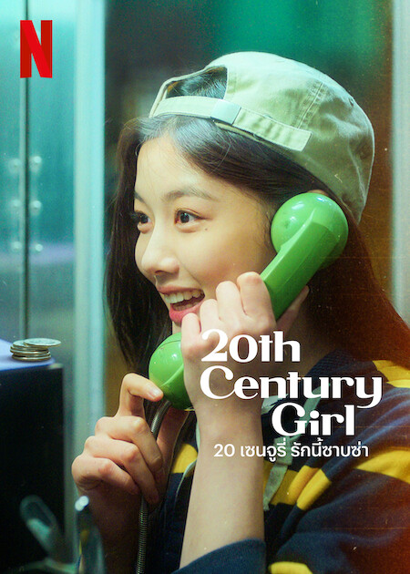

20th Century Girl (Korean: 20세기 소녀; RR: 20segi Sonyeo) is a South Korean romance drama film written and directed by Bang Woo-ri in her feature film debut, starring Kim Yoo-jung, Byeon Woo-seok, Park Jung-woo, and Roh Yoon-seo. The film depicts the friendship and freshness of first love against the backdrop of 1999.[1] It was released on October 21, 2022 on Netflix.[2]
Set in 1999, the story revolves around Na Bo-ra (Kim Yoo-jung), a seventeen-year-old high school student with a bright personality. Bo-ra's best friend, Yeon-du (Roh Yoon-seo), who has been preparing to visit the US for heart surgery, suddenly declares that she cannot leave as she has fallen in love with a boy from their school whose name she knows as Baek Hyun-jin (Park Jung-woo). Bo-ra promises that she will follow Baek Hyun-jin, find out everything about him, and email what she discovers. Reassured, Yeon-du departs. At school, Bo-ra starts to follow Hyun-jin. One day, she overhears that Hyun-jin and his best friend Poong Woon-ho (Byeon Woo-seok) will join the broadcasting club at school, so she successfully auditions to join the club. While Woon-ho joins the club, Hyun-jin does not. Bo-ra tries to get close to Woon-ho in order to observe Hyun-jin. Hyun-jin, mistaken that Bo-ra is interested in him, asks her to date him only to be rejected by her. Meanwhile, Bo-ra realizes that she has fallen in love with Woon-ho, who has developed feelings for her as well.
When Yeon-du returns to Korea after successful heart surgery, they realize that Bo-ra has been following the wrong boy, and that the real 'Baek Hyun-jin' whom Yeon-du loves is actually Poong Woon-ho, a confusion caused by the boy wearing his friend's school jacket bearing his name tag. Loyal to her friend, and protective because of her health condition, Bo-ra conceals that she loves the same Woon-ho. Then Bo-ra starts to avoid Woon-ho so that their blossoming relationship will end, but through Hyun-jin, Yeon-du learns that Woon-ho and Bo-ra like each other. A tearful Yeon-du tells Bo-ra that she can give up Woon-ho for the sake of their friendship.
Meanwhile, Woon-ho prepares to move back to New Zealand to resume life with his mother and younger brother. On the day of his departure, with the help of Yeon-du and Hyun-jin, Bo-ra arrives at the train station just in time for them to confess their feelings before separating. They maintain contact while Woon-ho plans to attend university in Seoul. Without explanation, Woon-ho stops answering Bo-ra's emails; she never hears from him again. Heartbroken, confused, and angry, Bo-ra tries to get over him.
Time passes as Bora attends university and matures. In 2019, she receives an invitation to an art exhibition from a person named Joseph, who turns out to be Woon-ho's younger brother, from whom she learns that Woon-ho died all those years ago. Joseph thanks Bo-ra for remembering Woon-ho and says that the happiest moments in Woon-ho's short life were spent in her company. As the film ends, Bo-ra views a video made by Woon-ho that depicts their time together.
Seventeen-year-old high school student, a Taekwondo practitioner, and a member of the broadcasting club at her school.
Bo-ra’s classmate and a member of the broadcasting club.
Woon-ho’s best friend, a popular man who is liked by his classmates.